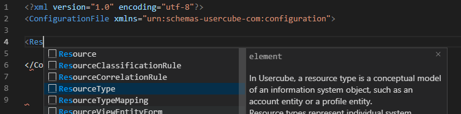
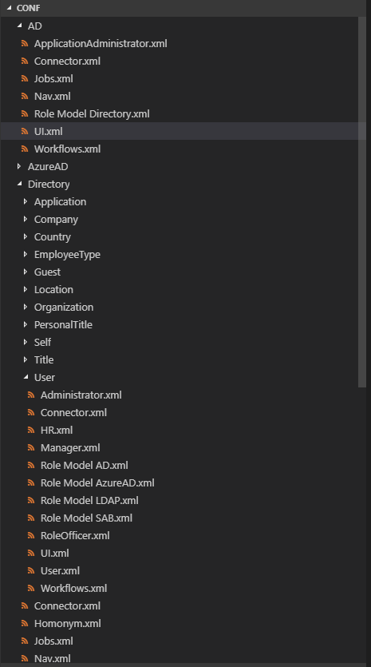

Recommendations
Editor
Visual Studio Code is the recommended editor for configuration. Its extensions can highly benefit the configuration experience. Netwrix Identity Manager (formerly Usercube) recommends the following extensions:
- Project Manager for file organization;
- Xml Tools for XML formatting;
- XML by RedHat to provide auto-completion of XML configuration based on an XSD file;
- Powershell for Powershell formatting;
- Rainbow CSV for CSV formatting;
- GitLens for file history features.
Configure auto-completion
RedHat's XML extension provides auto-completion based on an XSD file. It opens an auto-completion popup when you start to edit an element or attribute name. You can open the popup by typing Ctrl-Space.

Configure auto-completion by proceeding as follows:
-
Retrieve from the SDK artifact the
usercube-configuration.xsdandUsercube.Demo.code-workspacefiles. -
Make sure that these files are in the working directory (for example
C:/UsercubeDemo). -
In
Usercube.Demo.code-workspace, declare the following setting, replacing the pathC:/UsercubeDemo/usercube-configuration.xsdby the path of your XSD file:"settings": { "xml.fileAssociations": [ { "systemId": "file:///C:/UsercubeDemo/usercube-configuration.xsd", "pattern": "**/*.xml" } ] }
Version Control System
A version control system (like Git) is also recommended so files and configuration history could be tracked.
File Hierarchy
Some folders in the XML configuration contain files that are generated by Identity Manager and that must not be modified manually:
- Runtime/Workforce
- Runtime/Bootstrap
For the configuration to be more readable it is recommended to classify configuration by Connector or Application Entity. For each Connector or Application Entity create a folder in which will put:
- Connector.xml file containing the definition of the Connector, the EntityTypes,the EntityAssociations and their mappings.
- Administrator.xml file containing all the ACE for the administrator profile.
- Role Model.xml file containing the role model configuration.
- UI.xml file containing the User Interface configuration.
- Jobs.xml file containing the jobs configuration.
- Workflows.xml file containing the Workflows configuration for the given connector.
